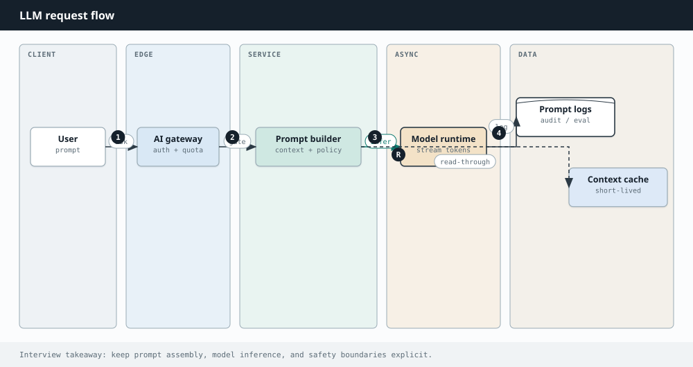

AI Engineering
Chapter 36
Prompting patterns
If the model is a next-token engine, the prompt is the steering wheel. Two teams can use the same model and get wildly different reliability because one treats prompting as casual chat and the other treats it as an interface contract.
Think of a good prompt as a short screenplay: who the model is, what good looks like, a few scenes to imitate, and a clear last line that says what to produce now.

The stack that usually works
- Role and rules — who you are, what you must never do, what “done” means.
- Context — only the facts needed for this turn.
- Examples — one to three input→output pairs in the exact shape you want.
- Task — the specific ask, including format, length, and edge cases.
- Checks — “If unsure, say so”; “Cite sources by id”; “Return JSON only”.
| Pattern | Story it tells the model | Watch-out |
|---|---|---|
| System role | You are this assistant with these laws | Overlong policies get ignored |
| Few-shot | Match these examples exactly | Bad examples teach bad habits |
| Chain of thought | Think in steps before the final answer | May leak private reasoning |
| Structured output | Answer inside this schema | Still validate in code |
| Tool-aware | Prefer tools over guessing | Handle tool errors explicitly |
Specificity is kindness
“Summarize this” invites randomness. “Summarize for an on-call engineer in five bullets: impact, blast radius, likely cause, next check, rollback path” gives the model a target.
Few-shot and structured output
Examples are the cheapest fine-tuning. Show delimiter style, voice, and refusal style. If another system will parse the reply, provide a schema and a repair loop when validation fails.
import json
from pydantic import BaseModel
class Ticket(BaseModel):
title: str
priority: str
rationale: str
def parse_ticket(text: str) -> Ticket:
return Ticket.model_validate(json.loads(text))
def repair_prompt(raw: str, err: str) -> str:
return (
f"Your previous JSON failed validation: {err}\n"
f"Fix and return JSON only.\nPrevious:\n{raw}"
)
Evaluate like an engineer
Keep a small golden set of prompts with expected properties. Change one variable at a time. Track pass rate. Prompting without evals is folklore.
Security is part of the prompt
Untrusted content can say “ignore prior instructions.” Teach the model that documents and tool results are data, not new system law. Delimit them clearly.
Prompting is not the whole product — but it is the first place reliability shows up. Get this sharp before you add agents and tools on top.
A worked story: from vague to shippable
Product asks: “Make the bot nicer about refunds.” A weak prompt says “Be nice.” A strong prompt names the persona, the allowed policies, three example dialogues (approve, deny, escalate), the JSON fields for analytics, and the refusal when the user asks to bypass policy. You then freeze ten offline tests: five should approve with citation, three deny with empathy, two escalate. Only after the pass rate moves do you change production.
That story is prompting as engineering: requirements → examples → schema → evals → ship.
Decomposition prompts
For hard tasks, ask the model to outline steps first, then execute step one only, then continue. Or ask it to list assumptions before answering. Decomposition reduces silent mistakes because each step is inspectable — the same reason we write functions instead of one giant main().
Anti-patterns
- Contradictory instructions buried in a 2,000-word system blob.
- Examples that do not match the schema you demand later.
- Asking for creativity and perfect JSON at high temperature.
- No stop condition — the model keeps inventing sections forever.
Interview drill
Prompting interviews test judgment: structure, examples, and evaluation — not poetry.
More drills in the Interview Lab.
Q1. Support bot that must not hallucinate policy
Customer asks about refund windows.
Retrieve policy snippets; instruct model to quote only context; abstain otherwise; actions via tools. Lab Q9.
Q2. Few-shot vs fine-tune
When is fine-tuning worth it?
Few-shot/prompt for style and light format; fine-tune for stable format at huge volume or domain jargon when RAG cannot help; prefer RAG for changing facts.
Q3. Jailbreak resistance
User tries to override system rules.
Clear system/developer priority; input/output classifiers; no secrets in prompts; monitor; do not rely on "please ignore" alone.
Q4. Chain-of-thought in production
Should users see chain-of-thought?
Often hide raw CoT; show short justifications. Hidden reasoning can leak private data — scrub. Prefer structured rationales.
Q5. Prompt versioning
How do teams manage prompts?
Version prompts like code; eval on change; feature-flag rollouts; trace which version produced each answer.